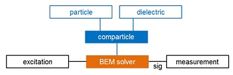
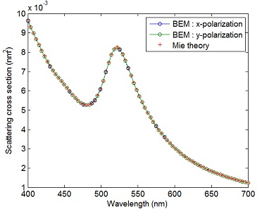

Getting Started with the MNPBEM Toolbox
Here we present a simple simulation example demospecstat1.m for a gold nanosphere embedded in water, and discuss the basic components of the MNPBEM toolbox. A more detailed description of the BEM theory and the different classes can be found in the following sections and in the user guide.
Contents
Setting up the dielectric environment
MNPBEM simulations typically start by setting up the BEM options and defining the dielectric environment.
% options for BEM simulation op = bemoptions( 'sim', 'stat' ); % table of dielectric functions epstab = { epsconst( 1.33 ^ 2 ), epstable( 'gold.dat' ) }; % dielectric environement for single sphere p = comparticle( epstab, { trisphere( 144, 10 ) }, [ 2, 1 ], 1, op );
In the above example we first define a simulation using a quasistatic BEM solver. In the second command line a table of dielectric functions, consisting of a constant dielectric function with a refractive index of 1.33 (water) and a tabulated dielectric function representative for gold, is set up. The third command line defines in comparticle the dielectric environment for a gold nanosphere embedded in water, where:
- epstab is the table of dielectric functions.
- trisphere(144,10) defines a sphere with 144 vertices and with a diameter of 10 nanometers.
- [2,1] points in the table epstab to the the dielectric functions in- and out-side the nanosphere.
- 1 indicates that the surface of the nanosphere is a closed surface.
Below we will give a more detailed description of how to properly define the dielectric properties of single, coupled and connected nanoparticles which are described by different dielectric functions. To plot the particle that we have just produced we execute
% plot metallic nanosphere plot( p, 'EdgeColor', 'b' );
Solving Maxwell's equations with the BEM solver
The next step is to set up a BEM solver
% set up BEM solver
bem = bemsolver( p, op );
The working principle of BEM solvers is depicted in the following flow chart:

After defining the surface and the dielectric properties of the metallic nanoparticle, we can compute for a given excitation (e.g. plane-wave illumination, oscillating dipole) the surface charges sig located at the boundaries of the nanoparticle. sig is determined such that the boundary conditons of Maxwells's equations are fulfilled. Once sig is computed, we can evaluate various measurement quantities such as scattering or absorption cross sections.
% light wavelength in vacuum enei = linspace( 400, 700, 80 ); % plane wave excitation, light polarization and propagation direction exc = planewave( [ 1, 0, 0; 0, 1, 0 ], [ 0, 0, 1; 0, 0, 1 ], op ); % scattering cross section sca = zeros( length( enei ), 2 ); % main loop over different excitation wavelengths for ien = 1 : length( enei ) sig = bem \ exc( p, enei( ien ) ); sca( ien, : ) = exc.sca( sig ); end
In the above example we first define the photon energies enei and the type of excitation, here a plane-wave excitation for two different light polarizations [1,0,0] and [0,1,0] and light propagation direction along z. In the wavelengths loop, the command sig=bem\exc computes the surface charges sig and we finally compute through exc.sca(sig) the scattering cross section. The cross section can be finally plotted via
plot( enei, sca, 'o-' ); % annotate plot xlabel( 'Wavelength (nm)' ); ylabel( 'Scattering cross section' );

Copyright 2017 Ulrich Hohenester